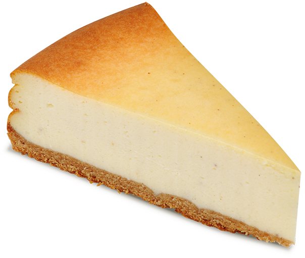

Käsekuchen

Das Käsekuchen Rezept
Im Folgenden wird das Käsekuchen Lecker Schmecker Rezept beschrieben. Wenn Sie dieser Anleitung folgen, können sie heute in weniger als 2 Stunden arschgeilen Käsekuchen essen!
Die Zubereitungszeit beträgt 30 Minuten, danach muss der Kuchen allerdings noch für eine Stunde in den Ofen und dann noch für 30 Minuten ziehen
Demnach können Sie in spätestens 2 Stunden Schlemmen!!!
Zutaten für den Teig
- Sahne
- Saure Sahne
- Quark
- 3 Eier
- Mehl
- Zucker
- Ganz viel Liebe
- die Kraft der Freundschaft!
Zutaten für die Füllung
- eigentlich genau dasselbe
- Luft und Liebe
- eine große Portion Spaß
- Rühre Rühre Rühre
Die einzelnen Schritte für den Teig
- alles zusammenrühren
- verkneten auf angenehm
- zur Seite stellen und Ruhen lassen
Die einzelnen Schritte für die Füllung
Wichtig: Am Besten jetzt schon den Ofen vorheizen
- alles zusammenschmeißen
- Sahne steif schlagen
- unterrühren
Zusammenwurf der Schritte
- Teig in eingefettete Form geben und verteilen
- an den Rändern 2-3cm nach oben ziehen
- Füllung dazugeben
- im Vorgeheizten Backofen 1h backen lassen